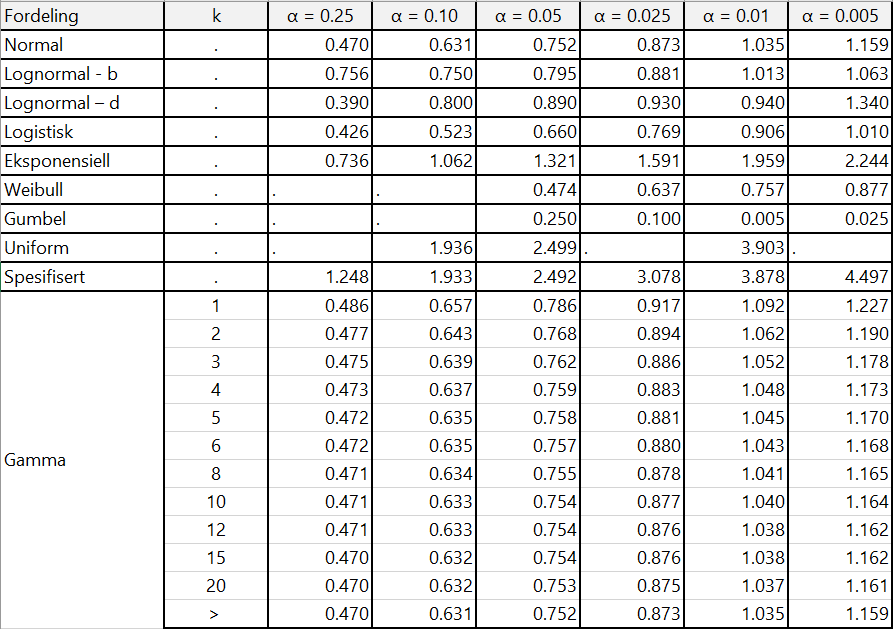

Vedlegg 7 - Anderson-Darling test for normalitet
Jfr. Anderson and Darling (1954), Stephens (1979), Jäntschi and Bolboacă (2018) og Zaiontz (2020)
| Fordeling | AD.verdi |
|---|---|
| Generisk/uniform | \[A=-n-\frac{1}{n}\sum_{i=1}^{n}(2_i-1)[lnF(X_i)+ln(1-F(X_{n-i+1}))]\] |
| Normal/lognormal | \[A^2=A(1+\frac{75}{n}+\frac{2.25}{n^2})\] |
| Gamma \(k=1\) | \[A(1+\frac{6}{n})\] |
| Gamma \(k\ge1\) | \[A+(\frac{0.2+\frac{0.3}{k}}{n})\] |
| Eksponensiell | \[A(1+\frac{6}{\sqrt{n}})\] |
| Weilbull/Gumbel | \[A(1+\frac{0.2}{\sqrt{n}})\] |
| Logistisk | \[A(1+\frac{0.25}{\sqrt{n}})\] |
For gammafordeling er k parameteret (“shape parameter”) definert som \(\alpha\).
Kritiske verdier for Anderson-Darling test. Merk: hvis man søker på nett finner man ulike framstillinger med noen avvikende verdier – vi har basert verdiene for normalfordeling på D’Agostino and Stephens (1986:123, tabell 4.7). Øvrige verdier er basert på Marsaglia and Marsaglia (2004) og Stephens (1974, 1976, 1977, 1978, 1979).
Du kan laste ned tabellen i en Excel-fil her: Download AD-alpha.xlsx

Tabell over \(\alpha\) verdier